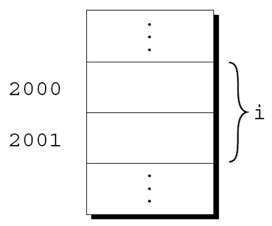
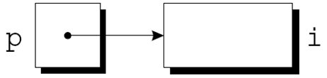

C语言程序设计基础
指针
计算机学院 杨已彪
yangyibiao@nju.edu.cn
提纲
-
引入指针
-
指针变量
-
取地址运算符
-
间接寻址运算符
-
指针赋值
-
指针作为参数
-
指针作为返回值
-
动态内存分配
引入指针
函数间参数全部都是按值传递(PASS BY VALUE)
// 值传递示例
void swap_by_value(int a, int b) {
int temp = a;
a = b;
b = temp; // 这里 a 和 b 的值交换了，但只是副本的交换
}
int main() {
int x = 10, y = 20;
swap_by_value(x, y);
printf("x=%d, y=%d", x, y); // 输出：x=10, y=20，没有改变！
}如何在函数间高效、灵活地传递数据？
引入指针
访问/修改内存中存放的数据的方法：
-
直接访问：直接通过变量名（variable name）访问/修改存储某个变量的内存中的值（函数内使用变量）
-
间接访问：间接通过内存地址（memory address）访问/修改编号为address的内存中的值（函数间传递地址）
&取地址运算符*间接寻址运算符
引入指针
如何理解？
-
亲自把礼物送到手里（同一学校 -> 函数内）
-
通过快递公司送礼物（不同学校 -> 函数间）
指针变量
地址：C语言中的地址，就是内存中某个位置的门牌号
指针变量
多数现代计算机中的内存被划分为字节
每个字节存储8位信息(Contents):

内存中每个字节都有一个唯一的地址 (Address).
int n = 0;
scanf("%d", &n); // & 取地址运算符
printf("%p", &n);指针变量
内存中每个字节有一个唯一的地址 (Address). 如果内存中有n个字节, 其字节的地址可编号为: \(0 \sim n – 1\)

若内存为8GB, \(1GB = 2^{30}\) 字节, 则 \(8GB = 2^{33}\)字节 其内存地址编号为：\(0 \sim 2^{33} - 1\)
指针变量
程序中的每个变量都占用一个或多个字节的内存, 例如:
char c; // 一个字节
short i; // 两个字节第一个字节的地址被称为变量的地址. 如图, 变量i的地址为 2000:

指针变量
指针变量：用于存储 Address(内存地址) 的变量，一个存储内存地址的变量，代表指向某个具体的内存地址
指针变量 存储的内容 为 Address(内存地址)
当将变量i的地址存储在指针变量p中时, 则p指向i:
int i = 0, j = 1;
int *p; // 声明一个指向整数类型的指针变量p
p = &i; // &i指取变量i的地址, 赋值给指针变量p
p = &j; // 修改为j的地址
*p = 8; // 等同于 i = 8, 对*p的操作等同于对i的操作
声明指针变量
当一个指针变量被声明时, 它的名字前面必须有一个星号:
int *p;
int* p; // 语句1与2有区别吗？
int* p, q; // q是指针变量吗？
int *p, *q;p是一个指针变量, 能够指向int类型的对象.
p可以指向不属于某个变量的内存区域.
声明指针变量
指针变量可以与其他变量一起出现在声明中:
int i, j, a[10], b[20], *p, *q;C中每个指针变量只能指向特定类型的对象:
int *p; /* 只指向int */
double *q; /* 只指向double */
char *r; /* 只指向char */取地址和间接寻址运算符
C提供了一对专门与指针一起使用而设计的运算符.
要获取变量的地址, 使用 & 取地址运算符.
访问指针所指向的对象, 使用 * 间接寻址运算符.
取地址运算符
声明指针变量会为指针留出空间, 但不会使其指向对象:
int *p; /* 没有指向特定对象 */在使用p之前需要初始化它.
取地址运算符
初始化指针变量的一种方式可以将变量的地址赋值给指针变量:
int i, *p;
…
p = &i;把i的地址赋值给变量p, 使p指向i:

取地址运算符
可在声明指针变量时进行初始化:
int i;
int *p = &i; // 等价于 int *p; p = &i;i的声明也可以与指针p的声明合并:
int i, *p = &i;间接寻址运算符
一旦指针变量指向一个对象, 就可以使用 * 间接寻址运算符来访问对象中存储的内容.
-
对变量使用
&运算符获取变量的内存地址 -
对指针使用
*运算符则可以返回原始变量
如果p指向i, 则可以打印i的值:
int i = 2;
int *p = &i;
printf("%d\n", *p);
j = *&i; /* 等同于 j = i; */间接寻址运算符
p指向i, 则*p是i的别名.
*p与i具有相同的值.
更改*p的值会更改i的值.
间接寻址运算符
int i;
int *p;
p = &i;!w:10

间接寻址运算符
int i = 1;
int *p = &i;
printf("%d\n", i); /* 打印 1 */
printf("%d\n", *p); /* 打印 1 */!w:10

间接寻址运算符
int i = 1;
int *p = &i;
printf("%d\n", i); /* 打印 1 */
printf("%d\n", *p); /* 打印 1 */
*p = 2;
printf("%d\n", i); /* 打印 2 */
printf("%d\n", *p); /* 打印 2 */
间接寻址运算符
将间接寻址运算符用于未初始化的指针变量会导致未定义行为:
int *p;
printf("%d", *p); /*** 错误的 ***/给*p赋值特别危险:
int *p;
*p = 1; /*** 错误 ***/指针赋值
C允许使用赋值运算符来复制相同类型的指针.
int i, j, *p, *q;指针赋值:
p = &i;指针赋值
int i, j, *p, *q;
p = &i;
q = p;q现在指向与p相同的位置:

指针赋值
p和q都指向i, 可通过*p或*q赋值来更改i:
int i, j, *p, *q;
p = &i;
q = p;
*p = 1;
指针赋值
int i, j, *p, *q;
p = &i;
q = p;
*p = 1;
printf("i = %d, *p = %d, *q = %d\n", i, *p, *q);
*q = 2;
printf("i = %d, *p = %d, *q = %d\n", i, *p, *q);
任意数量的指针变量都可以指向同一个对象.
指针赋值
指针赋值:
int i, j, *p, *q;
i = 1;
p = &i;
q = p;
*q = *p; // 指向的对象赋值: 指针赋值
int i, j, *p, *q;
p = &i;
q = &j;
i = 1;
指针赋值
int i, j, *p, *q;
p = &i;
q = &j;
i = 1;
*q = *p;
指针作用
指针用途
-
间接访问与修改数据（无需知道变量名，只要知道其地址，就能操作它）
-
在函数内部修改外部变量的值
-
数组名本质上就是数组首元素的地址
-
动态内存管理（Dynamic Memory Allocation）
指针作为参数
swap函数的定义:
void swap(int *a, int *b)
{
int temp = *a;
*a = *b;
*b = temp
}指针作为参数
swap函数的声明:
void swap(int *a, int *b);或
void swap(int *, int *);调用swap函数:
swap(&x, &y);指针作为参数
回顾scanf
scanf调用中的参数是指针:
int i;
…
scanf("%d", &i);如果没有&, 传递给scanf函数的将是i的值.
指针作为参数
scanf的参数必须是指针, 但并非总需要&运算符:
int i, *p;
p = &i;
scanf("%d", p);使用&运算符是错误的:
scanf("%d", &p); /*** 错误 ***/指针作为参数
不正确地向函数传递所需要的指针可能导致灾难性的后果. 缺少&运算符的swap调用:
swap(x, y);将导致修改未知的内存地址, 而不是修改 x 和 y.
在scanf的例子中, 通常不会检查出传递指针失败.
函数调用使用指针
函数间使用指针主要是为了效率:
-
传递大的数组变量需要大量的存储空间, 浪费存储空间, 也浪费时间(数组拷贝).
程序: 查找数组中最大和最小的元素
minmax.c max_min.c程序使用名为 max_min 的函数来查找数组中的最大和最小元素. max_min的原型:
void max_min(int a[], int n, int *max, int *min);max_min的调用示例:
max_min(b, N, &big, &small);当max_min找到数组b中的最大元素时, 它通过将其赋值给*max来将值存储在big中, 通过将b的最小元素赋值给*min将其存储在small中.
程序: 查找数组中最大和最小的元素
max_min.c会将 10 个数字读入一个数组, 将其传递给max_min函数, 并打印结果: 输入10个数字: 34 82 49 102 7 94 23 11 50 31 最大: 102 最小: 7
程序: 查找数组中最大和最小的元素
maxmin.c
/* Finds the largest and smallest elements in an array */
#include <stdio.h>
#define N 10
void max_min(int a[], int n, int *max, int *min);
int main(void)
{
int b[N], i, big, small;
printf("Enter %d numbers: ", N);
for (i = 0; i < N; i++) {
scanf("%d", &b[i]);
}
max_min(b, N, &big, &small);
printf("Largest: %d\n", big);
printf("Smallest: %d\n", small);
return 0;
}
void max_min(int a[], int n, int *max, int *min)
{
int i;
*max = *min = a[0];
for (i = 1; i < n; i++) {
if (a[i] > *max) {
*max = a[i];
} else if (a[i] < *min) {
*min = a[i];
}
}
}指针作为返回值
允许函数返回指针:
int *max(int *a, int *b)
{
if (*a > *b)
return a;
else
return b;
}max函数返回作为参数传递给它的指针.
指针作为返回值
调用max函数:
int *p, i, j;
…
p = max(&i, &j);调用后, p指向i或j.
指针作为返回值
函数还可以返回指向外部变量或静态局部变量的指针, 但永远不要返回指向自动局部变量的指针:
int *f(void)
{
int i;
…
return &i; // i是局部变量, 错误代码
}函数f返回后变量i对象不存在.
指针与数组
函数参数中的数组参数, 其实就是指针, 可看作等价的函数原型
int sum(int a[], int len);
int sum(int [], int);
int sum(int *a, int len);
int sum(int *, int);数组变量是一种特殊的指针（const指针）
int a[10];
int *p = a;
a == &a[0];
int b[] = a;//wrong!指针的运算
指针可以和数组同等取下标运算
int a[10];
int *p = a;
p[0] == a[0]指针的运算
指针的算术运算
-
利用指针的算术运算来代替数组下标进行处理
int a[10], *p;
p = a;
p++;-
p+1 ? 加其指向类型的sizeof大小
-
如果指针指向的不是连续内存，没有意义
-
一般和数组关系密切
-
`* 与 ++`
*p++;
*(p++);
(*p)++;
++*p;
++(*p);
*++p;
*(++p);`* 与 ++`
*p++
-
等同于*(p++)
-
虽然优先级高，但是没有++高
-
取出p所指的数据来，然后顺便把p移到下一个位置
-
常用于数组遍历这样的连续空间操作
-
在某些CPU中，可以被翻译成一个单独的指令
-
指针比较
<, <=, ==, >, >=, !=
比较表示的内存地址
数组中单元的地址是线性递增的
指针的赋值
不同类型不可以相互赋值
int *p; char *q;
q = p;-
void *:表示不知道指向什么类型空间的指针-
与char*解读类似
-
-
指针也可以做类型转换
-
int *p = &i; void *q = (void *)p; -
通过q解读内存的视角变了
-
指针作为返回值
指针可以指向数组元素. 如果a是一个数组, 则&a[i]是指向a中元素i的指针. 函数返回指向数组中某个元素的指针有时很有用. 下面的函数假设a有n个元素, 返回一个指向数组中间元素的指针:
int *find_middle(int a[], int n) {
return &a[n/2];
}使用const保护参数
当参数是指向变量x的指针时, x的内容在函数中有可能被(有意无意)修改:
f(&x);然而, 常常函数f只通过指针去读值指向的值, 而不是修改它所指向的内容.
指针与const
指针是const, p指针指向关系一旦确定不可再变
- int * const p = &a;
- *p = 100; // ok
- p = &b; // ERROR
- p++; // ERROR
指针所指是const, 表示不能通过该指针修改此变量（并不能使变量变成const）
- const int *p = &a;
- *p = 100; // ERROR
- a = 100; // ok
- p = &b; // ok
- 数组名称天然是const，不可改变其值，常量地址
const与数组
const数组
- const int a[] = {1,2,3,4,5};
- 数组变量已经是const指针，再加const代表每个数组单元是const
- 因此，必须通过初始化赋值
参数中用const修饰数组参数
- int sum(const int a[], int len);
- 可以要求函数内部不应该修改原始数组
使用const保护参数
可以使用const来表明函数不会更改指针参数所指向的对象.
const放置在形式参数的声明中, 后面紧跟着其类型说明:
void f(const int *p)
{
int j;
*p = 0; /*** 错误 ***/
p = &j; /*** 合法 ***/
}尝试修改\*p, 编译器会报错.
使用const保护参数
void f(int * const p)
{
int j;
*p = 0; /*** 合法 ***/
p = &j; /*** 错误 ***/
}void f(const int * const p)
{
int j;
*p = 0; /*** 错误 ***/
p = &j; /*** 错误 ***/
}多维数组与指针
int matrix[3][10];
- matrix // int (*)[10]
- matrix+1 // &(matrix[1])
- *(matrix+1) + 5 // &(matrix[1][5])
- &matrix + 1 // out of bound
- *(*(*(matrix+1)+5) // SEGSEV
多维数组作为参数
void func(int (*mat)[10])
void func(int mat[][10])
void func(int **mat) //Different动态内存分配
malloc和free
C函数库提供malloc和free，分别用于执行动态内存的分配与释放
int *arr = NULL;
int n = 10;
// 动态分配可以存放10个整数的内存空间
arr = (int*)malloc(n * sizeof(int));
...
free(arr);函数malloc
#include <stdlib.h>
void *malloc(size_t _Size);向malloc申请的空间的大小是以字节为单位的 返回类型默认是void *
int *array = (int *) malloc(len * sizeof(int))
int *array = malloc(len * sizeof(int))
int *array = malloc(len * sizeof(*array))示例: malloc.c
-
分配失败返回NULL(判断是否分配失败)与arr[n] 有本质区别
free
#include <stdlib.h>
void free(void *pointer);free(ptr):释放指针指向内存，指针变量依然存在(野指针)
为防止释放后写, 建议 ptr = NULL
-
需要释放之前动态申请的内存, 一对一配对使用
-
内存泄漏memory leak
示例: malloc_space.c
动态内存分配的常见错误
-
申请了没有free
-
对NULL指针进行解引用
-
对分配的内存越界操作
-
释放并非动态分配的内存（段错误）
-
试图释放动态分配的内存的部分
-
释放后依旧试图继续使用
一些其他memory allocation函数
void *malloc(size_t size);
void *calloc(size_t nitems, size_t size);
void *realloc(void *ptr, size_t new_size);
void free(void *ptr);-
malloc: allocates memory
-
calloc: allocates and zeros memory
-
realloc: expands previously allocated memory block
-
free deallocates previoulsy allocated memory
##### 动态存储分配
C的数据结构, 包括数组, 通常是固定大小.
固定大小的数据结构可能会浪费大量内存资源.
C支持动态存储分配: 在程序执行期间分配内存单元的能力.
使用动态存储分配, 可以设计根据需要扩大(和缩小)的数据结构.
动态存储分配
动态存储分配最常用于字符串、数组和结构体.
动态分配的结构可以链接形成链表、树和其他数据结构.
动态存储分配是通过调用内存分配函数来完成的.
内存分配函数
-
malloc — 分配内存块, 但不对其进行初始化.
-
calloc — 分配内存块并进行清零.
-
realloc — 调整先前分配的内存块的大小.
这些函数返回一个void *类型的值(一个"通用"指针).
空指针
如果内存分配函数找不到请求大小的内存块, 则返回空指针.
空指针是可以与所有有效指针区分开来的特殊值.
在将函数的返回值存储在指针变量中之后, 需要判断它是否为空指针.
空指针
malloc的返回值的示例:
p = malloc(10000);
if (p == NULL) {
/* allocation failed; take appropriate action */
}NULL是一个表示空指针的宏(在各种库头文件中定义). malloc的调用与NULL测试可结合起来:
if ((p = malloc(10000)) == NULL) {
/* allocation failed; take appropriate action */
}空指针
指针以与数字相同的方式测试真假.
所有非空指针都为真; 只有空指针是假的.
if (p == NULL) …
if (!p) …
if (p != NULL) …
if (p) …语句1-2等价, 4-5等价
动态分配字符串
动态存储分配常用于处理字符串.
若字符串存储在字符数组中, 很难预测数组需要的长度.
动态分配字符串, 则允许在程序运行时决定长度.
##### 使用malloc为字符串分配内存
malloc函数的原型:
void *malloc(size_t size);
malloc分配size个字节的内存块并返回一个指向它的(类型为void*)指针.
size_t是库中定义的无符号整数类型.
使用malloc为字符串分配内存
为n个字符的字符串分配内存的malloc调用:
char *p;
p = malloc(n + 1);每个字符需要一个字节的内存; 加1是为空字符留出空间.
一些程序员更喜欢强制转换malloc的返回值:
p = (char *) malloc(n + 1);使用malloc为字符串分配内存
malloc分配的内存不需要清零, 因此p将指向带有n+1个字符的未初始化的数组:

使用malloc为字符串分配内存
调用strcpy是初始化此数组的一种方法:
strcpy(p, "abc");数组中的前四个字符现在将是a、b、c和\0: